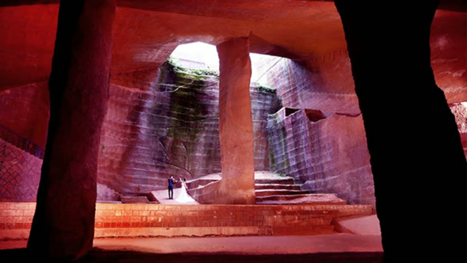
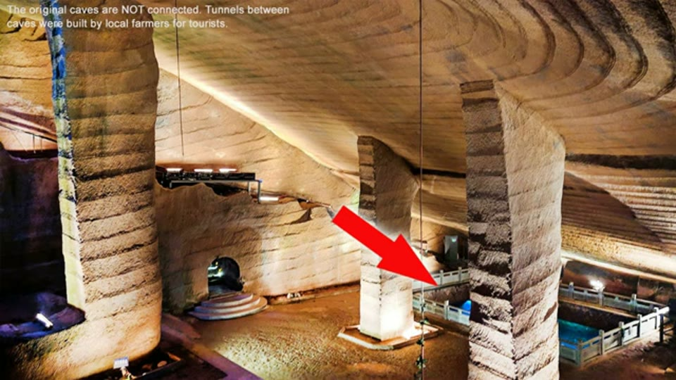
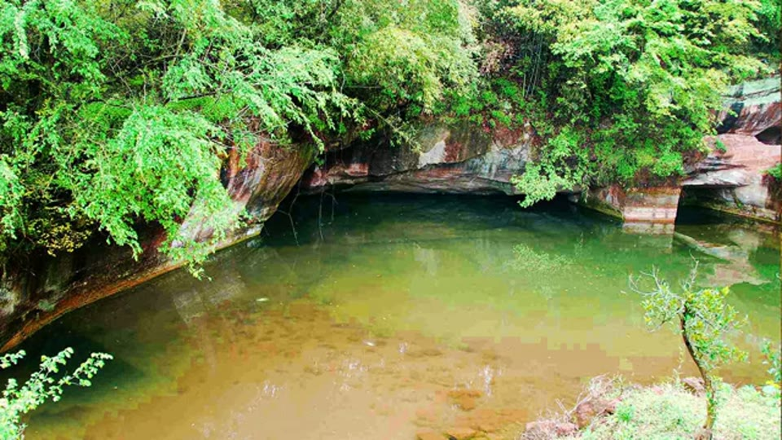
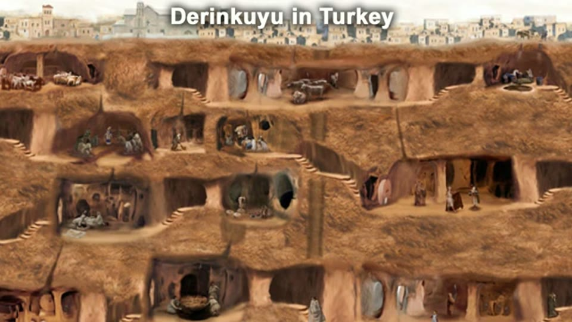
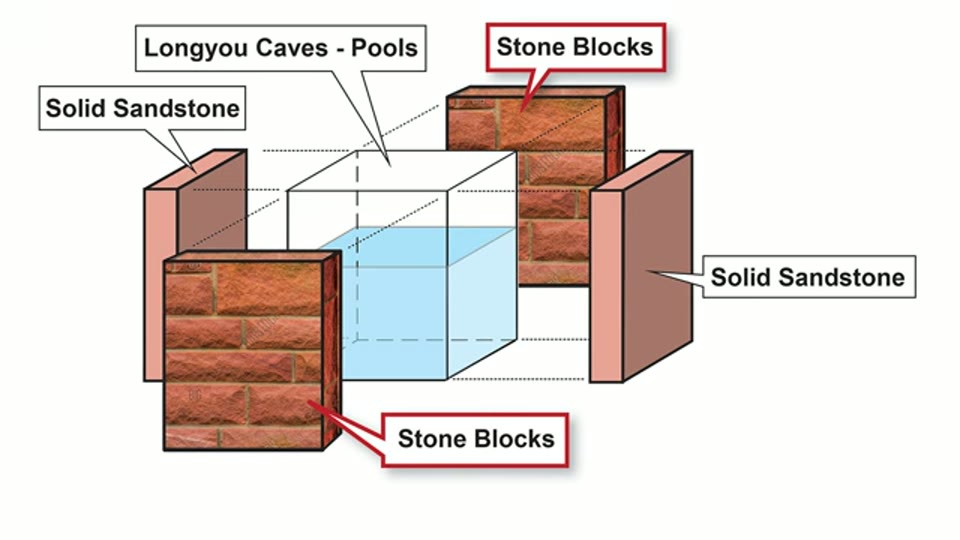
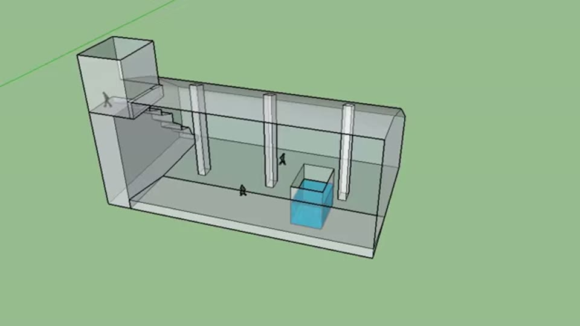
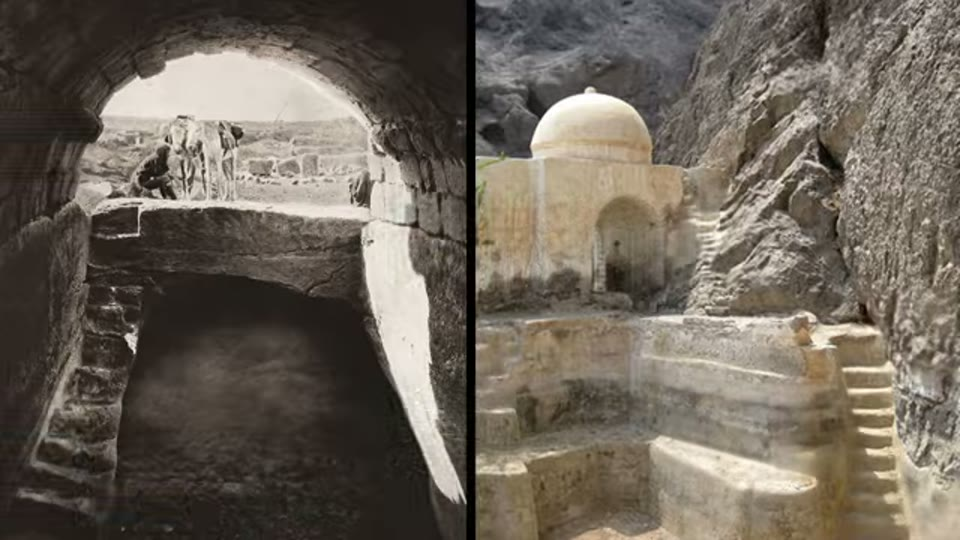
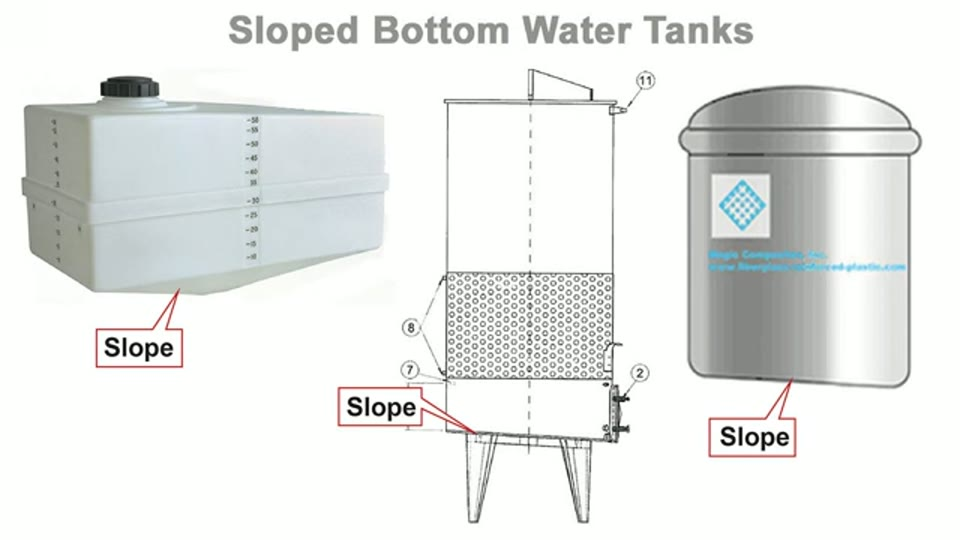

Curious Being
Mystery Solved on the Purpose of Longyou Caves!
Tina · 13 min · watch on YouTube · summarised 2026-08-22
Longyou is a set of large rock-cut halls in Zhejiang, at least 2,000 years old, found in 1992 when villagers pumped out a pond for seventeen days and nights hoping for fish and treasure 01:18–02:09. They found an enormous empty chamber and neither fish nor treasure.
Every cave has the same layout 00:53–01:15: one grand hall, a small entryway, oversized stairs, a sloped ceiling, and one or more sunken rectangular hollows in the middle.


One enormous hall, cut to a plan: sloped ceiling, broad stairs down, rock pillars left standing, and the same parallel banding over every surface.
Her claim is a function, not a mystery, and it is mundane: these are wells and cisterns. She presents it as her own new theory 00:06–00:13. That claim of priority has not been checked here.
The problem she is solving
She states the existing explanations and why they are not accepted 05:08–05:53: quarry, tomb, king's palace, storage, hiding place. The objection to all of them is a list of absences —
- no soot, no sign of oil lamps or torches, in caves with no natural light
- no accessible entryways and no normal-sized stairs
- no living quarters, no furniture, no artefacts
- no connections between neighbouring caves — and she is careful about this one: a caption on screen at 02:24 says the tunnels a visitor walks through today were cut by local farmers for tourists, and are not original
- and for the quarry reading: why cut stone underground at all, when quarrying at the surface would be easier and safer?
This is the mainstream work done properly — the accepted options stated, with the specific reason each fails.

The only way in, and the reason the site was never lost: villagers used these ponds for centuries because they never ran dry.
Why not dwellings
The caves are so uniform that she raises residential use herself, then rules it out by comparison 06:16–07:32. Derinkuyu in Turkey is multi-level, human-scale and interconnected "like a neighborhood"; the cave houses of Spain, Italy and Turkey each have an entryway, bedroom, kitchen and living area. Longyou has one cavernous space and nothing else.
Her line is the memorable one: even if they were built by giants, "giants still need to sleep, cook and raise a family." People partition living space by function, and this is not partitioned.

What a rock-cut settlement actually looks like: many small rooms with separate functions, connected. Longyou is one empty hall.
The evidence that points at water
Three observations, and they are the substance of the video.
The caves refill. They must be pumped weekly or they flood 02:48–03:03. The site sits on a small hill very close to a river, so she reads the caves as connected to an aquifer or underground stream. The ponds above them never went dry, which is why villagers used them for centuries.
The sunken pools are built, not just cut 03:24–03:52. This is the sharpest point in the video. She cites scholars describing the pools as having two walls of carved bedrock and two walls assembled from stone blocks — and the blocks are more permeable than the surrounding sandstone, so water passes through them. The builders could have carved all four walls out of the rock and did not.

Two walls cut from the bedrock and two built from laid blocks, which are more permeable, so water can pass through them. On her reading that is how you build the bottom of a well.
Her reading: that is how the bottom of a well is built. A well uses porous material such as gravel at the base to draw water in from the aquifer. If the pools are wells, the location follows — the builders chose a site with an understanding of the hydrogeology, which is why there is still water there today.
The fish 02:02–04:11. The villagers caught a fish in the pond, drained the whole cave, and found nothing. She turns the anecdote into an argument: the fish had somewhere to go, so the pool bottoms are probably not solid. She is explicit that she could find no information on the pool bottoms, so this is an inference.

The rectangular hollow in the floor of each hall, about 5 m deep, that her whole well-and-cistern reading turns on.
The cistern comparison
A well reaches groundwater; a cistern stores rainwater. She argues Longyou does both 07:52–08:52, then shows municipal cisterns in Istanbul, Paris, Copenhagen and Jordan, and one at Masada 08:53–09:38, asking whether the scale is not comparable.
The features she says the cistern reading explains:
| feature of Longyou | on the cistern reading |
|---|---|
| enormous single empty space | storage volume; nothing else belongs in it |
| stairs going down | access to the water, and to the bottom for maintenance |
| sloped bottom | sludge and leaves discharge to one point, and it can be cleaned out |
| small entryway | a cistern is closed, not entered casually |
| no soot, no quarters, no artefacts | nobody lived or worked in it for long |
| no connections between caves | separate tanks, separately owned |
| underground rather than open | less evaporation loss, insulated by rock |

Large underground water stores, cut or built, with stairs down to the water for drawing and for cleaning out the bottom.
The sloped bottom she compares directly to a modern sloped-bottom tank, which exists for exactly that reason 09:44–10:00. Different cave sizes she attributes to different needs — household against agricultural — or different owning families.

A sloped floor is what you give a tank you intend to drain and clean, and it is still standard practice.
Her closing point is the strongest version of the argument 11:11–11:27: the caves still fill with water, and still have to be pumped. On her reading they are not ruined, they are working.
What you can check yourself
- The two-and-two pool walls are the load-bearing observation and she attributes it to published scholars. Whether two walls are cut bedrock and two are laid blocks is a photographable, verifiable fact.
- Permeability of those blocks against the local sandstone is a laboratory measurement.
- Whether the pool bottoms are solid would settle the fish argument and much of the well reading. She says the information does not exist; it is obtainable.
- The absence of soot is checkable and, if it holds, is a strong constraint on any use requiring people to be inside for long.
- The weekly pumping is an operational fact about the site as it is run today.
- The comparison cisterns — Masada, the Istanbul cisterns, Derinkuyu — are all documented sites whose dimensions can be put side by side with Longyou's rather than eyeballed.
What the video does not settle
- A cistern needs to be sealed, and porous walls leak. The video wants the pool walls permeable so groundwater can enter, and the caves watertight so water can be stored. Those pull in opposite directions and she does not reconcile them.
- No dating, and no argument for the machining. She concludes the caves were "built by a lost prehistory civilization with machinery", but that is carried over from her earlier video and not argued here. The cistern hypothesis is entirely independent of it: a well-and-cistern reading works just as well for the conventional two-thousand-year-old date, and nothing in this video requires the lost civilisation.
- Scale is not addressed as a cost. If these are water tanks, they are absurdly expensive ones. The video never asks why a community would cut a ballroom out of rock to hold water when a smaller tank would hold enough.
- No water chemistry, sediment or residue analysis is offered. A tank used for centuries should leave a deposit line, and that would be decisive.
- The two most important images in the video are diagrams she drew. The pool-wall construction at 03:25 is an exploded illustration, and the pool itself at 02:42 is a 3D model. Both are clear and both are statements of the claim rather than photographs of the thing claimed. For an argument whose whole force is "look at how these pools are built", that gap matters, and a reader should know it is there before being persuaded.
- The comparison cases are analogies, not evidence. Masada and the Basilica Cistern show that big underground water stores exist; they do not show that Longyou is one.
- "No signs of wear and tear" is listed among the things her theory explains, but a tank in constant use is not obviously a low-wear environment.
What we have not checked
- The pool-wall description is attributed to "scholars" with no citation. It is the single most important observation in the video, and it has not been traced to a source.
- She says this theory is presented "for the 1st time". Whether a well-or-cistern reading of Longyou had already been proposed elsewhere has not been checked.
- The number of caves is not stated in the video and is not asserted here.